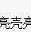
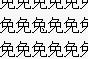
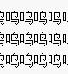
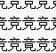
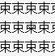
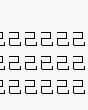
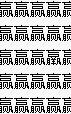
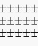

视力测试表。管你信不信，反正我信了！
#1 视力测试表。管你信不信，反正我信了！作者：掌棋宣传员 发表时间：2011-12-20 18:06:26
第一关：在“亮”中找到“壳” 等级1：瞎子亮亮亮亮亮亮亮亮亮亮亮亮亮亮亮亮亮亮亮亮亮亮亮亮亮亮亮亮亮亮亮亮亮亮亮亮亮亮亮亮亮亮亮亮亮亮亮亮亮亮壳亮亮亮亮亮亮亮亮亮亮亮亮亮亮亮亮亮亮亮亮亮亮亮亮亮亮亮亮亮亮亮亮亮亮亮亮亮亮亮亮亮亮亮亮亮亮亮亮亮亮亮亮亮亮亮亮亮亮亮亮亮亮亮亮亮亮亮亮亮亮亮亮亮亮亮亮亮亮亮亮亮亮亮亮亮亮亮亮亮亮亮亮亮亮亮亮亮亮亮亮亮亮亮亮亮亮亮亮亮亮亮亮亮亮亮亮亮亮亮亮亮亮亮亮亮亮亮亮亮亮亮亮亮亮亮亮亮亮亮亮亮亮亮亮亮亮亮亮亮亮亮亮亮亮亮亮亮亮亮
第二关：在“免”中找到“兔” 等级2：近视眼
免免免免免免免免免免免免免免免免免免免免免免免免免免免免免免免免免免免免免免免免免免免免免免免免免免免免免免免免免免免免免免免免免免免免免免免免免免免免免免免免免免免免免免免免免免免免免免免免免免免免免免免免免免免免免免免免免免免免免免免兔免免免免免免免免免免免免免免免免免免免免免免免免免免免免免免免免免免免免免免免免免免免免免免免免免免免免免免免免免免免免免免免免免免免免免免免免免免免免免免免免免免免免免免免免免免
第三关：在“呜”中找到“鸣” 等级3：水汪汪大眼睛
呜呜呜呜呜呜呜呜呜呜呜呜呜呜呜呜呜呜呜呜呜呜呜呜呜呜呜呜呜呜呜呜呜呜呜呜呜呜呜呜呜呜呜呜呜呜呜呜呜呜呜呜呜呜呜呜呜呜呜呜呜呜呜呜呜呜呜呜呜呜呜呜呜呜呜呜呜呜呜呜呜呜呜呜呜呜呜呜呜呜呜呜呜呜呜呜呜呜呜呜呜呜呜鸣呜呜呜呜呜呜呜呜呜呜呜呜呜呜呜呜呜呜呜呜呜呜呜呜呜呜呜呜呜呜呜呜呜呜呜呜呜呜呜呜呜呜呜呜呜呜呜呜呜呜呜呜呜呜呜呜呜呜呜呜呜呜呜呜呜呜呜呜呜呜呜呜呜呜呜呜呜呜呜呜呜呜呜呜呜呜呜呜呜呜呜呜呜呜呜呜呜呜呜呜呜呜呜呜呜呜
第四关：在“竞”中找到“竟” 等级4：炯炯有神
竞竞竞竞竞竞竞竞竞竞竞竞竞竞竞竞竞竞竞竞竞竞竞竞竞竞竞竞竞竞竞竞竞竞竞竞竞竞竞竞竞竞竞竞竞竞竞竞竞竞竞竞竞竞竞竞竞竞竞竞竞竞竞竞竞竞竞竞竞竞竞竞竞竞竞竞竞竞竞竞竞竞竞竞竞竞竞竞竞竞竞竞竞竞竞竞竞竞竞竞竞竞竞竞竞竞竞竞竞竞竞竞竞竞竞竞竞竞竞竞竞竞竞竞竞竞竞竞竞竞竞竞竞竞竞竞竞竞竞竞竞竞竞竞竞竞竞竞竞竞竟竞竞竞竞竞竞竞竞竞竞竞竞竞竞竞竞竞竞竞竞竞竞竞竞竞竞竞竞竞竞竞竞竞竞竞竞竞竞竞竞竞竞竞竞竞竞竞竞竞竞竞竞竞竞竞竞竞竞竞
第五关：在“束”中找到“柬” 等级5：电子监视器
束束束束束束束束束束束束束束束束束束束束束束束束束束束束束束束束束束束束束束束束束束束束束束束束束束束束束束束束束束束束束束束束束束束束束束束束束束束束束束束束束束束束束束束束束束束束束束束束束束束束束束束束束束束束束束束束束束束束束束束束束束束束束柬束束束束束束束束束束束束束束束束束束束束束束束束束束束束束束束束束束束束束束束束束束束束束束束束束束束束束束束束束束束束束束束束束束束束束束束束束束束束束束束束束束束束
第六关：在“己”中找到“已” 等级6：显微镜
己己己己己己己己己己己己己己己己己己己己己己己己己己己己己己己己己己己己己己己己己己己己己己己己己己己己己己己己己己己己己己己己己己己己己己己己己己己己己己己己己己己己己己己己己己己己己己己己己己己已己己己己己己己己己己己己己己己己己己己己己己己己己己己己己己己己己己己己己己己己己己己己己己己己己己己己己己己己己己己己己己己己己己己己己己己己己己己己己己己己己己己己己己己己己己己己己己己己己己己己己己己己己己己己己己
第七关：在“赢”中找到”羸” 等级7：哈雷望远镜
赢赢赢赢赢赢赢赢赢赢赢赢赢赢赢赢赢赢赢赢赢赢赢赢赢赢赢赢赢赢赢赢赢赢赢赢赢赢赢赢赢赢赢赢赢赢赢赢赢赢赢赢赢赢赢赢赢赢赢赢赢赢赢赢赢赢赢赢赢赢赢赢赢赢赢赢赢赢赢赢赢赢赢赢赢赢赢赢赢赢赢赢赢赢赢赢赢赢赢赢赢赢赢赢赢赢赢赢赢赢赢赢赢赢赢赢赢赢赢赢赢赢赢赢赢赢赢赢赢赢赢赢赢赢赢赢赢赢赢赢赢赢赢赢赢赢赢赢赢赢赢赢赢赢赢赢赢赢赢赢赢赢赢赢赢赢赢赢赢赢赢赢赢赢赢赢羸赢赢赢赢赢赢赢赢赢赢赢赢赢赢赢赢赢赢赢赢赢赢赢赢赢赢赢赢赢赢赢赢赢赢赢赢赢赢赢赢赢赢赢赢赢赢赢赢赢赢赢赢赢赢赢赢赢赢赢赢赢赢赢赢赢赢赢赢赢赢赢赢赢赢赢赢赢赢赢赢赢赢赢赢赢赢赢赢赢赢赢赢赢赢赢赢赢赢赢赢赢赢赢赢赢赢赢赢赢赢赢赢赢赢赢赢赢赢赢赢赢赢赢赢赢赢赢赢赢赢赢赢赢赢赢赢赢赢赢赢赢赢赢赢赢赢赢赢赢赢赢赢赢赢赢赢赢赢赢赢赢赢赢赢赢赢赢赢赢赢赢赢赢赢赢赢赢赢赢赢赢赢赢赢赢赢赢赢赢赢赢赢赢赢赢赢赢赢赢赢赢赢赢赢赢赢赢赢赢赢赢赢赢赢赢赢赢赢赢赢赢赢赢赢赢赢赢赢赢赢赢赢赢赢赢赢赢赢赢赢赢赢赢
第八关：在“士”中找到”土” 等级8：火眼金睛
士士士士士士士士士士士士士士士士士士士士士士士士士士士士士士士士士士士士士士士士士士士士士士士士士士士士士士士士士士士士士士士士士士士士士士士士士士士士士士士士士士士士士士士士士士士士士士士士士士士
#2 Re:视力测试表。管你信不信，反正我信了！作者：失落刀 发表时间：2011-12-20 18:11:47
第三关卡壳了，，#3 Re:视力测试表。管你信不信，反正我信了！作者：虎哥 发表时间：2011-12-20 20:55:36
通关了
#4 Re:视力测试表。管你信不信，反正我信了！作者：梧桐风 发表时间：2011-12-20 22:04:14







#5 Re:视力测试表。管你信不信，反正我信了！作者：掌棋如烟 发表时间：2011-12-24 1:33:53
第八关比哪关找的都快，几乎一眼就看到了！！！！#6 Re:视力测试表。管你信不信，反正我信了！作者：屏蔽 发表时间：2011-12-24 6:29:57
ctrl+f毫无鸭梨
#7 Re:视力测试表。管你信不信，反正我信了！作者：蓝天蓝 发表时间：2011-12-24 8:15:27
通关了